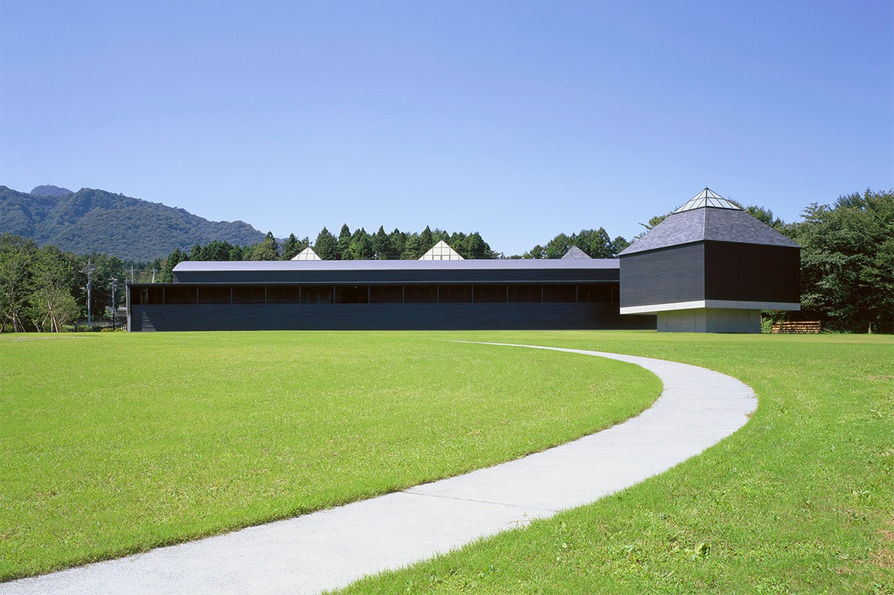
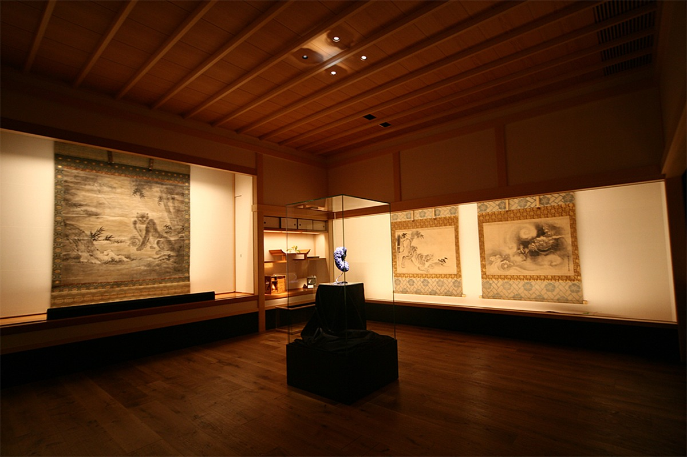
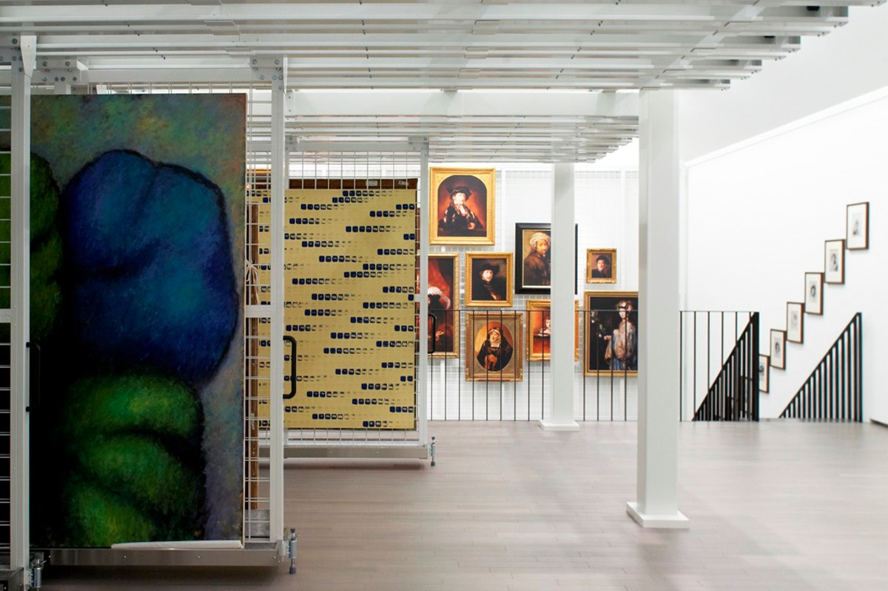
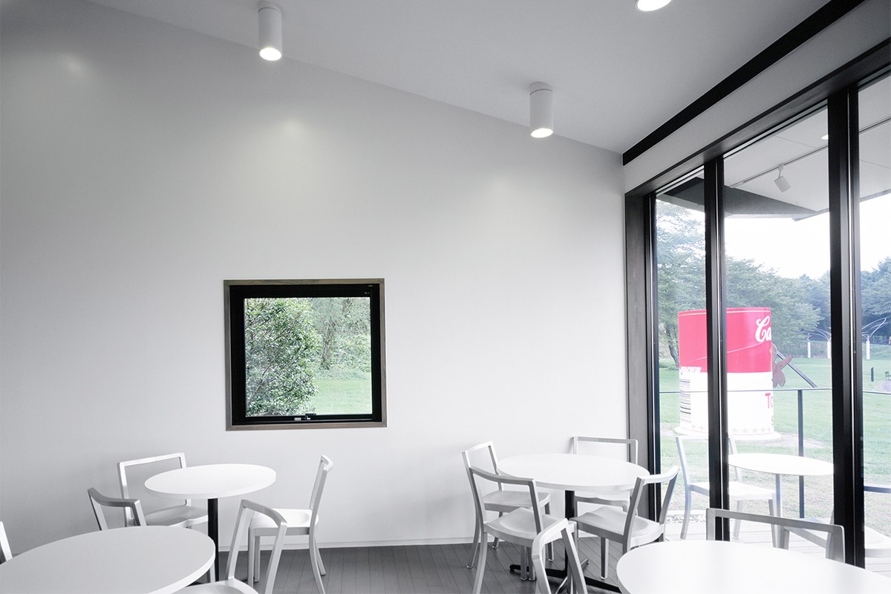
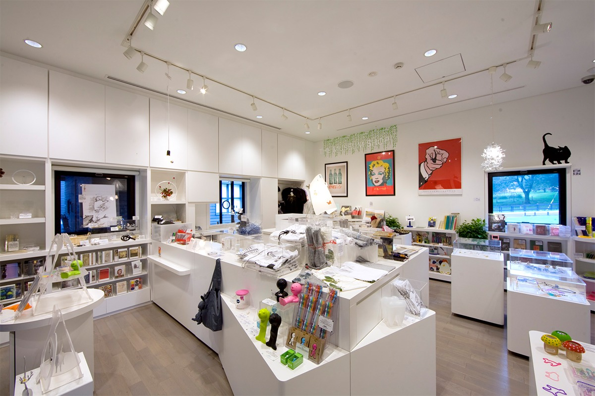

Префектура Гумма · Сибукава · искусство
Hara Museum ARC: чёрный музей Араты Исодзаки у подножия горы Харуна

Музей Хара, больше сорока лет проработавший в Токио, в апреле 2021 года начал новую жизнь в горах префектуры Гумма. С тех пор он называется Hara Museum ARC, и само его чёрное здание работы Араты Исодзаки смотрится как произведение искусства.
Переезд
Из Токио в горы
Больше сорока лет музей Хара работал в токийском районе Синагава, а в префектуре Гумма у него был филиал Hara Museum ARC. В апреле 2021 года музей и филиал объединились, и всё собрание обосновалось в Гумме под общим именем Hara Museum ARC.
Музей стоит в городе Сибукава, недалеко от онсэна Икахо, в зелёной местности, где много неба и простора. Сюда перевезли и часть работ из Токио, так что у музея появилось много нового для тех, кто любит искусство и архитектуру.
Архитектура
Чёрное дерево и мягкий свет
Музей построен на плато у подножия горы Харуна, одной из трёх знаменитых гор Гуммы. Строгие деревянные здания тёмного цвета спроектировал Арата Исодзаки (1931–2022), лауреат Притцкеровской премии 2019 года, которую называют Нобелевской премией в архитектуре.
Центральная галерея A с пирамидальной крышей и симметричные крылья галерей B и C по бокам освещены верхним светом. Мягкое дневное освещение здесь подходит для спокойного разглядывания современного искусства.

Совсем другое настроение в особом зале «Канкайан». Это тихое японское пространство в стиле сёин, где использованы дерево, камень, бумага васи и штукатурка, а во всех деталях видна работа мастеров. Исодзаки вдохновлялся гостевым залом бывшего монастыря Никко-ин при храме Миидэра в префектуре Сига: когда-то там висели росписи на перегородках, которые входят в собрание музея. В «Канкайане» старинное искусство Восточной Азии из коллекции Рокуро Хары (1842–1933), предпринимателя и банкира эпохи Мэйдзи, включая национальные сокровища и важные культурные ценности, встречается с современными работами.
Под открытым небом расставлены постоянные работы японских и зарубежных художников, среди них Энди Уорхол и Жан-Мишель Отоньель. Часть электричества музей получает от солнечных батарей.
Хранилище
Картины на выдвижных стенах
В открытом хранилище держат часть собрания музея Хара. Специалисты, то есть кураторы, критики, сотрудники учебных и научных учреждений, могут осматривать и изучать работы здесь. Для обычных посетителей планировались экскурсии по хранилищу. И то и другое только по предварительной записи; в 2021 году экскурсии были приостановлены из-за коронавируса, о возобновлении сообщает сайт музея.

Кафе
Café d'Art
В Café d'Art большие окна и высокий потолок. Здесь подают фирменные сэндвичи и пасту из свежих продуктов префектуры Гумма и мороженое фермы «Икахо Грин Бокудзё». По выходным пекут торт, придуманный по мотивам текущей выставки.

Магазин
The Museum Shop
В магазине продают каталоги выставок и книги об искусстве, вещи художников, дизайнерские мелочи и украшения: всё, что помогает впустить современное искусство в повседневную жизнь. Есть современные вещи, в которых чувствуется японское ремесло, и работы авторов, связанных с Гуммой, так что здесь легко найти подарок или сувенир из поездки.

Вокруг музея есть чем заняться: рядом ферма «Икахо Грин Бокудзё», где можно пообщаться с животными, старинный лечебный онсэн Икахо и храм Мидзусава-дэра, который в народе зовут Мидзусава Каннон. Зелень, широкое небо и искусство делают из поездки сюда неторопливый выходной.
Hara Museum ARC
- Адрес
- префектура Гумма, Сибукава, Канаи, 2855-1
- Телефон
- +81 279-24-6585
- Часы работы
- 9:30–16:30 (вход до 16:00)
- Выходные
- четверг (кроме праздников и августа), смена экспозиции, 1 января, зимний период
- Цены / Вход
- взрослые 1100 иен, старшеклассники и студенты 700 иен, школьники 500 иен, от 70 лет 550 иен; общий билет с фермой «Икахо Грин Бокудзё» 1800 иен для взрослых. В кафе и магазин тоже нужен входной билет
- Сайт
- haramuseum.or.jp
Фото: Садаму Сайто.